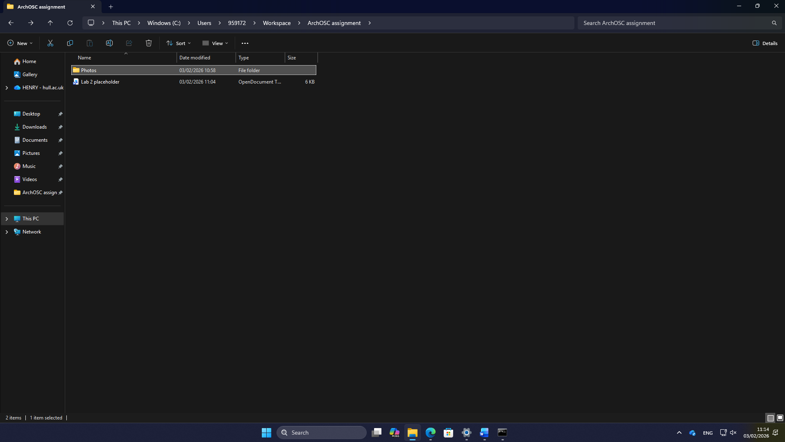
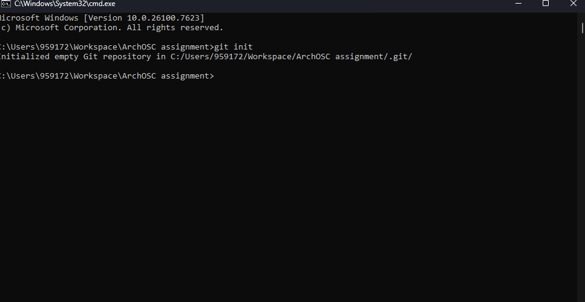
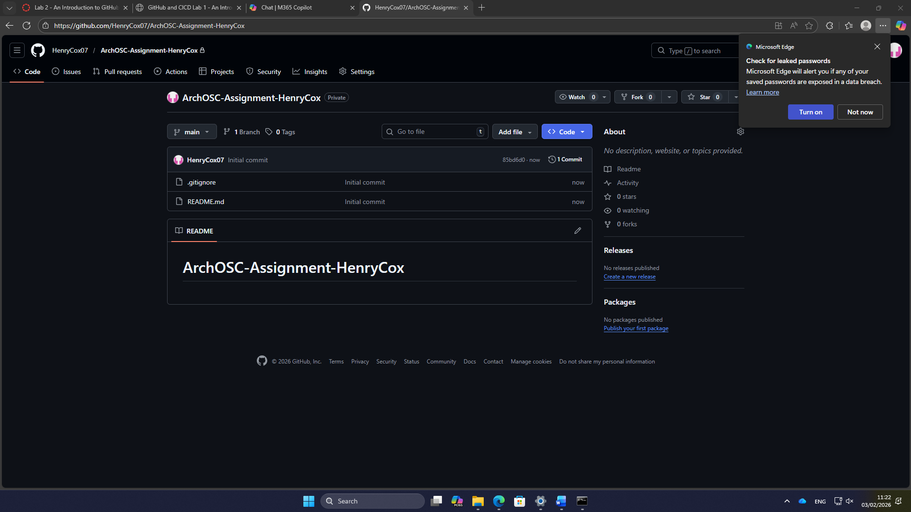
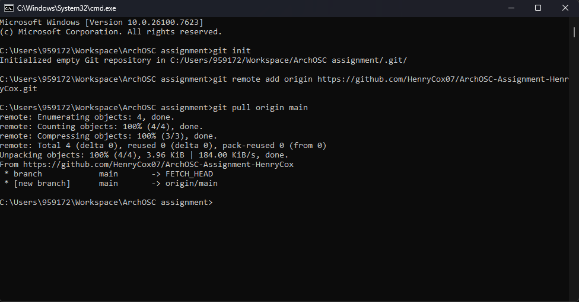
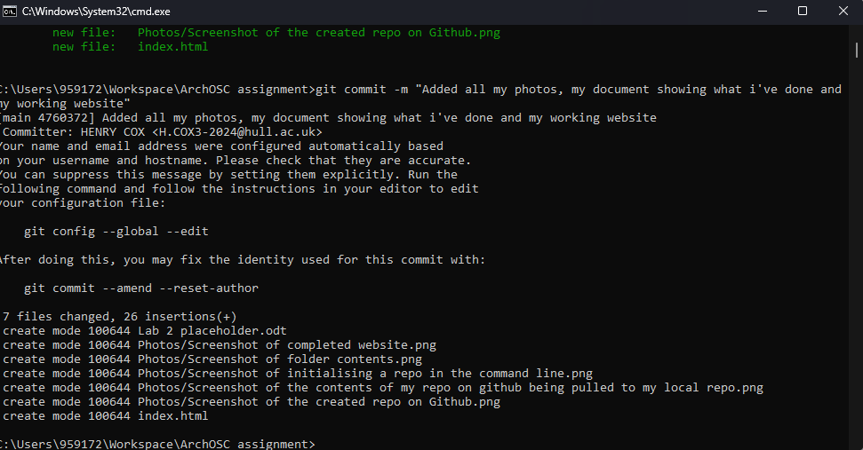
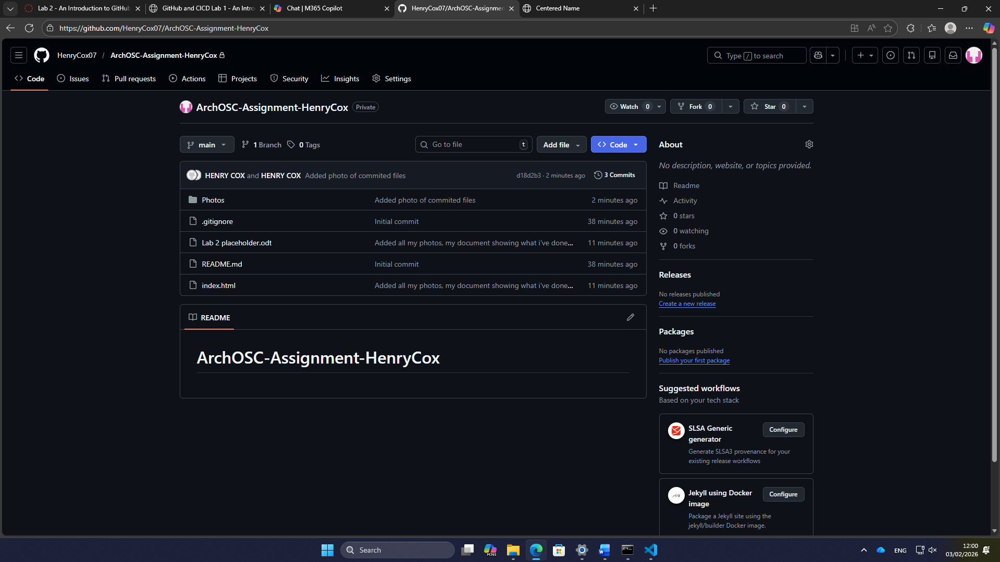
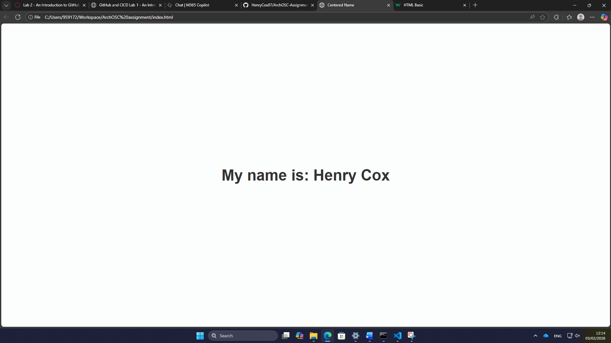
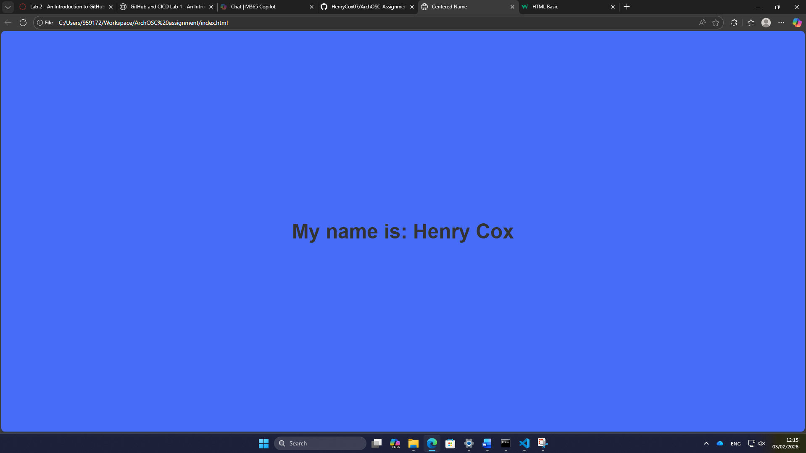

Lab 2
Task 1: To complete the first set of tasks I made a new local repository called ArchOSC assignment with the photos folder added into it. After that, I created a new document called lab 2 placeholder which was then saved into the local repository. Once the word doc was saved into the local repository, I took a screenshot of the repos contents which was then pasted into the Word doc.

Task 2: For the second task I had to initialise a new repo in the ArchOSC assignment folder. The way that I did this was by opening the command line inside the ArchOSC assignment folder. Then once I had the command line open in the correct folder, I had to type git init into the command line. This initialised an empty git repository in the folder.

Task 3: For the 3rd task I had to produce a repo on GitHub that my local repo can link to. To produce this I went onto GitHub and selected the new repo button; this took me to an options screen. I made the repo private and included a README.md file as well as a Visual Studio .gitignore file. All I needed to do at this point was select myself as the repo owner and I had a new repo.

Task 4: For this task I had to link both my local and online repo together and then pull the contents from my repo on GitHub onto the local repo. The way I achieved this is by using the command git remote add origin and then pasted the link to my online repo into the command. By using this command, I told the local repo where it should be looking if it is pulling or pushing information and then to add the contents of my repo on GitHub to my local repo I used git pull origin main. This worked because I created that link between the two repos; this pulled the contents of my online repo to my local one.

Task 5:
The fifth task required me to produce a website and save it into my local repo. To start I opened a new text file in Visual Studio code; once I made the text file, I copied the code I was provided into it. Once the code had been pasted into the file, I saved the file into my local repo and called it index.html. Now that the file has been saved onto my local repo, I opened the file in my browser to confirm that the webpage displayed correctly, and it worked.

Task 6: For task 6 I had to commit all my files to my local repository; the way I did this was using git status to check what files were in my local folder, then using git add . to add all the files from the folder to the local repo and then using git commit to save all the files onto the local repository as well as leaving a comment about what had just been committed.

Task 7: For this next task I had to push my committed files in my local repo to my repo on GitHub. To do this I used Git status to check if any files needed committing, I used the command git push and was then prompted to type the command git push --set-upstream origin main which pushed the files to my GitHub repo.

Task 8: For the first set of changes I went into the source code and altered the text in the body
from insert name here to my name. For the second change to the website, I altered the colour of the page in the source code from white to blue. I did this by going to background colour in the style body and changing the colour using the dropdown.


Task 9:
For this task I had to deploy the website onto GitHub; the way I did this is I went to my settings on GitHub to allow for deployments to be made. Then I directed the deployment to my main branch and saved the changes. When checking the deployment my website was there and this is important as this allows the website to be viewed in a browser instead of having to load it manually on my local machine.